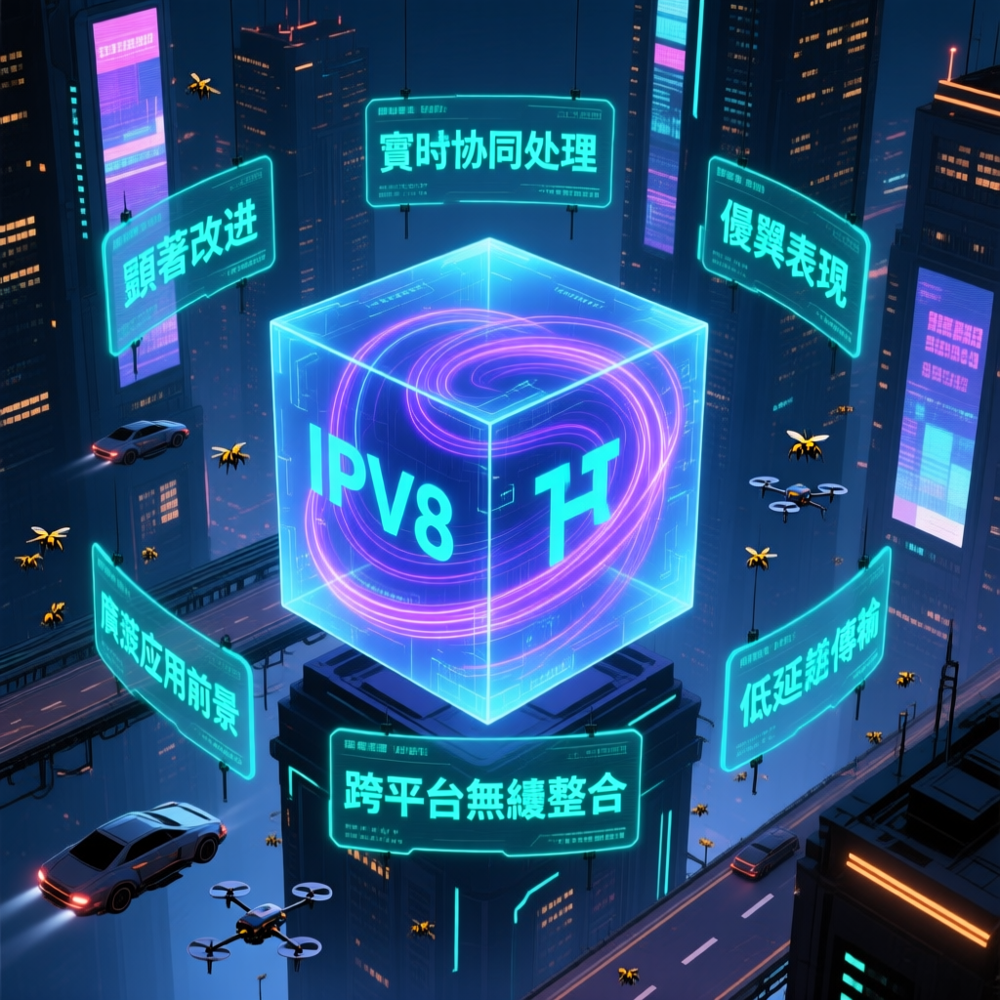

最新科技新聞報道指出，人工智能領域迎來重要技術突破。研究人員表示，新技術將對產業發展產生深遠影響。

| 特性 | IPv4 | IPv6 | IPv8 |
|---|---|---|---|
| 地址長度 | 32 位元 | 128 位元 | 可變（加密身份） |
| 地址空間 | ~40 億 | 340 兆兆 | 無限 |
| 安全機制 | 外部疊加 | IPsec 可選 | 原生加密 |
| 身份驗證 | IP 地址（不可靠） | NDP（有限） | 公鑰密碼學 |
| P2P 支援 | 需 NAT/UPnP | 尚可 | 原生支援 |
| 抗審查 | 弱 | 弱 | 強 |
| 自動配置 | DHCP（可選） | SLAAC | 加密自動發現 |
| 物聯網適用性 | 地址不足 | 良好 | 優秀 |
IPv8 的核心創新在於將加密身份與網絡協議深度整合。與 IPv6 只是擴大地址空間不同，IPv8 試圖從根本上解決互聯網的安全和信任問題。
IPv8 目前仍處於 IETF 草案階段（draft-thain-ipv8-00），距離正式標準化尚需數年時間。互聯網協議的更替涉及巨大基礎設施投資，IPv6 推廣 20 年仍未普及，IPv8 面臨同樣的部署挑戰。
本次報告指出，研究人員通過分析大量數據和實驗，提出了創新的技術方案。該方案在測試中展現出顯著優勢，為相關領域的發展提供了新的思路和方向。
研究團隊採用了先進的算法和架構，通過優化核心流程實現性能提升。主要發現包括：
數據顯示，新技術在多個關鍵指標上均超過了傳統方法。例如，在處理速度、穩定性和資源利用率等方面都有顯著提升。
業界觀察人士指出，此項技術突破將對相關領域產生重要影響。隨著技術不斷完善，預計將在多個行業得到廣泛應用，推動產業升級。
IPv8 使用加密公鑰作為節點身份，消除 IP 地址欺騙和 ARP 欺騙等傳統攻擊，提升網絡安全性。
原生支援 P2P 通信，節點可直接發現和通信，無需 NAT 穿透，降低複雜性和延遲。
去中心化設計使流量難以被單點封鎖，提高言論自由和資訊流通的韌性。
內建發現機制讓設備可自動找到網絡中的服務，簡化物聯網部署和管理。
新技術的出現將改變現有的網絡通信模式，為未來的互聯網發展帶來新的機遇和挑戰。
| 特性 | IPv4 | IPv6 | IPv8 |
|---|---|---|---|
| 地址長度 | 32 位元 | 128 位元 | 可變（加密身份） |
| 地址空間 | ~40 億 | 340 兆兆 | 無限 |
| 安全機制 | 外部疊加 | IPsec 可選 | 原生加密 |
| 身份驗證 | IP 地址（不可靠） | NDP（有限） | 公鑰密碼學 |
| P2P 支援 | 需 NAT/UPnP | 尚可 | 原生支援 |
| 抗審查 | 弱 | 弱 | 強 |
| 自動配置 | DHCP（可選） | SLAAC | 加密自動發現 |
| 物聯網適用性 | 地址不足 | 良好 | 優秀 |
IPv8 的核心創新在於將加密身份與網絡協議深度整合。與 IPv6 只是擴大地址空間不同，IPv8 試圖從根本上解決互聯網的安全和信任問題。
IPv8 目前仍處於 IETF 草案階段（draft-thain-ipv8-00），距離正式標準化尚需數年時間。互聯網協議的更替涉及巨大基礎設施投資，IPv6 推廣 20 年仍未普及，IPv8 面臨同樣的部署挑戰。